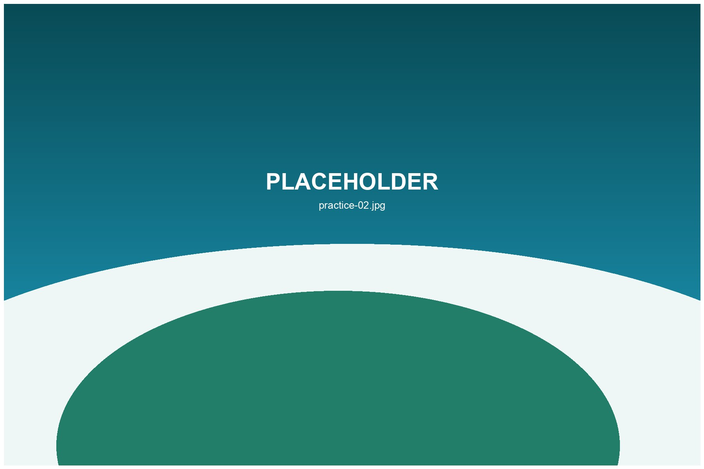

Driving Range
Warm up before a round or practice longer clubs with a simple range session.
Driving ranges, simulators and rainy day golf options for travelers who want flexible practice.
Indoor and covered practice facilities are useful for warm-ups, rainy days, swing checks and short sessions before a full course round.

Warm up before a round or practice longer clubs with a simple range session.
Weather-safe golf with launch data and private practice possibilities.
Keep golf in the itinerary even when outdoor course plans change.
Yes. They are time-efficient and work well when outdoor plans are disrupted by weather.
Yes. Indoor practice is often a comfortable first step before playing a course.
Some do, but rental availability should be checked before arrival.
Yes. See the Golf Lessons page for lesson and training program inquiries.